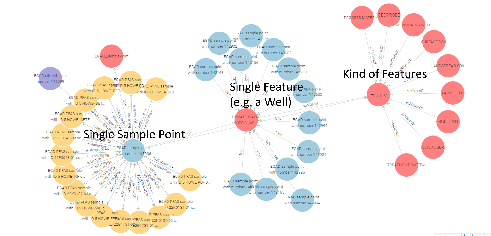

Overview
Safe Agricultural Products and Water Graph (SAWGraph): An Open Knowledge Network to Monitor and Trace PFAS and Other Contaminants in the Nation's Food and Water Systems
A ProtoOKN project
Our Goal: Connect federal and other datasets to more quickly analyze data and make decisions around PFAS sources, testing, impacts, and risks
What we want to know
- Which communities are at greatest risk?
- How do the millions of potential sources (sites where sludge has spread and close to industry, airports, firefighting training) affect their surroundings?
- Where does the PFAS end up? How do they get transported? How far, how quickly?
- What agricultural practices reduce PFAS exposure?
We don’t just want to provide raw data, but actionable knowledge that helps answer these questions

About
What are PFAs?
PFAS: A group of thousands of manmade chemicals
- Highly Persistent due to strong carbon-flourine bonds
- "Forever Chemicals": due to their properties, they don not break down easily
Toxicology and human health impacts of PFAS:
- Exposure and effects are poorly understood and likely underestimated
- Increased cholesterol levels
- Decreased vaccine response in children
- Changes in liver enzymes
- Small decreases in infant birth weights
- Increased risk of high blood pressure or pre-eclampsia in pregnant women
- Increased risk of kidney or testicular cancer
source
Where are PFAs?
- They are dispersed via air, soil and water
- How does PFAs get into the environment?
- Chemical Plants
- Landfills
- Wastewater
- Biosolids used as fertilizer in agriculture
- Sites of usage: Airports, firefighting training sites, spills
What's a Knowledge Graph?
- Establishes connections (links) across datasets
- Kind of a distributed database that can grow over time

Team
Team from University of Maine, Kansas State University, Northeastern University and EPA brings together computer science, data science, geospatial, and chemistry experts
Torsten Hahmann
PI
University of Maine
Hande McGinty
Co-PI
Kansas State University
Pascal Hitzler
Co-PI
Kansas State University
Ganga Hettiarachchi
Co-PI
Kansas State University>
Onur Apul
Co-PI
University of Maine
Hari Palani
Co-PI
Northeastern
Antony Williams
Federal Partner
EPA
Vasu Kilaru
Federal Partner
EPA
Shirly Stephen
PostDoc Researcher
University of California Santa Barbara
David Kedrowski
Research Assistant
University of Maine
Katrina Schweikert
Research Assistant
University of Maine
Sonia Moavensadeh
Research Assistant
University of Maine
Adrita Barua
Research Assistant
Kansas State University
Yinglun Zhang
Research Assistant
Kansas State University